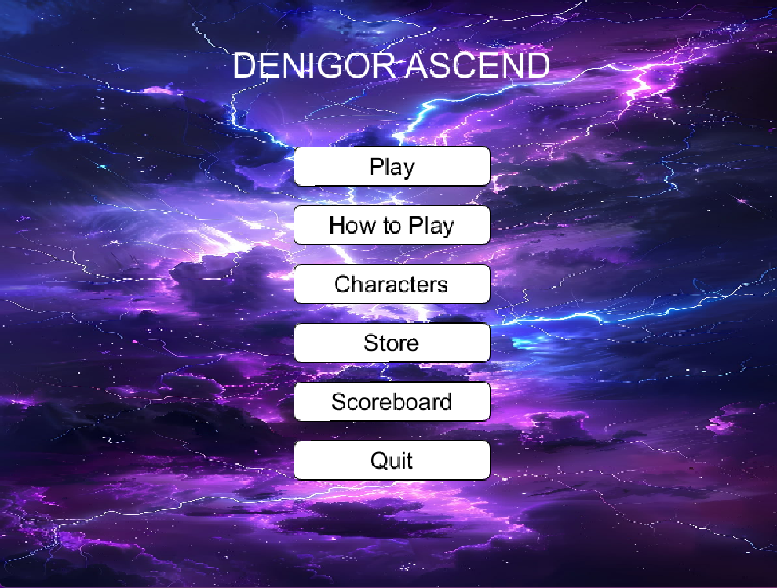
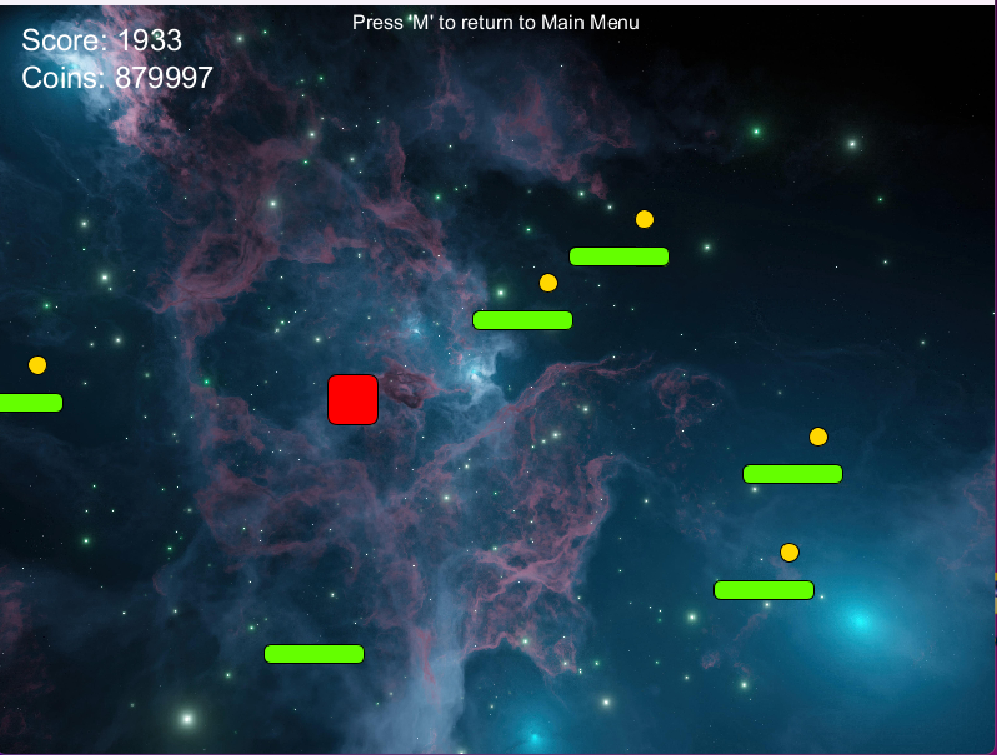
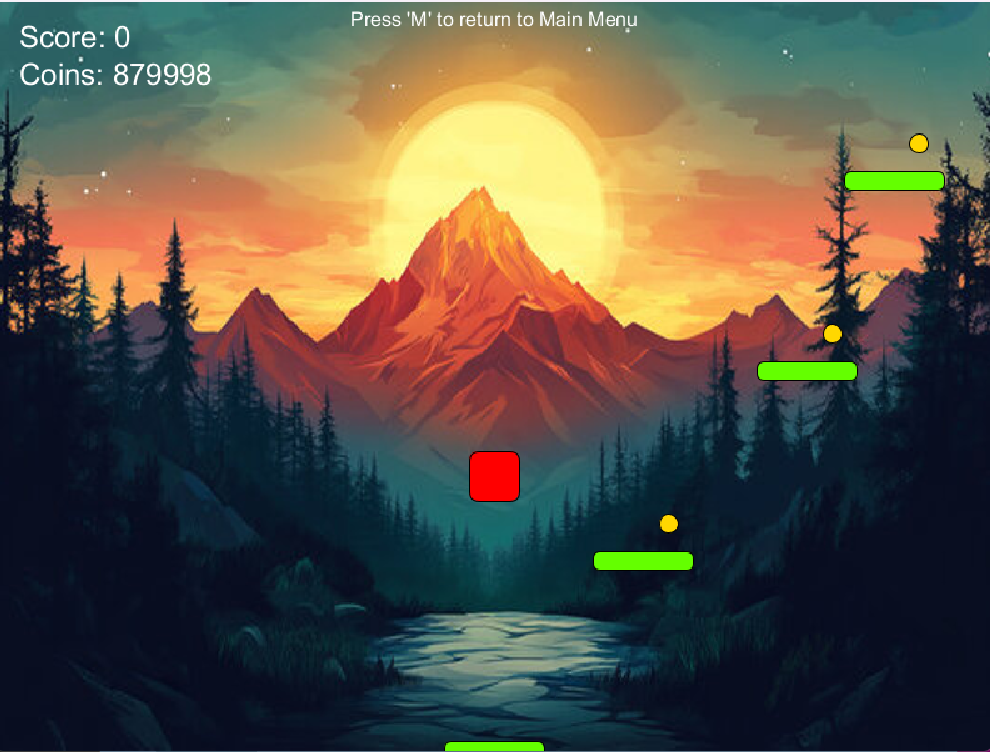

Mobile Game Clone & Physics Engine
Denigor Ascend is a high-performance Java-based clone of the popular "Doodle Jump" mobile game. It features custom object-oriented game logic and a precise physics simulation to handle character movement and platform interactions.
The project was built using a modular approach to separate the game's rendering, input handling, and physics calculation. By utilizing **Inheritance** and **Polymorphism**, the game efficiently manages different platform types (moving, breaking, static) under a single parent class.
Below are visuals from different stages of the game, highlighting the UI and the procedural platform generation.


